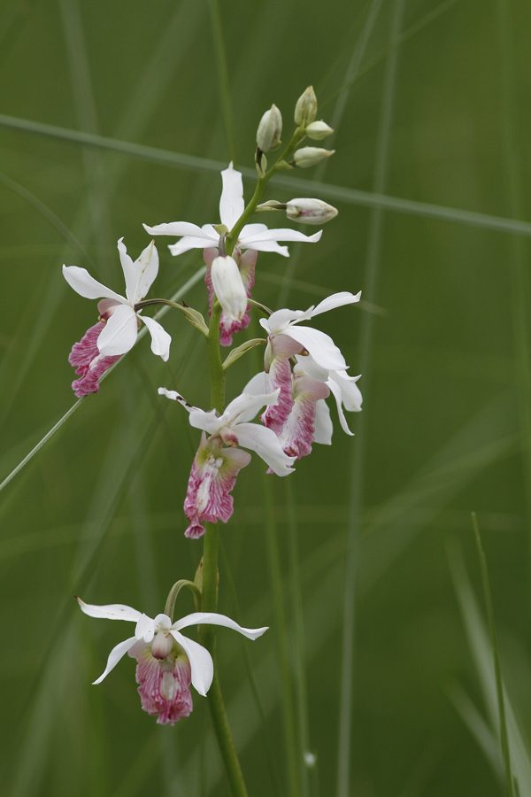

ब्लंट-लीव्ड यूलोफियाBlunt-leaved Eulophia
Eulophia obtusa · Orchidaceae · FLR-0421

- Scientific name वैज्ञानिक नाम
- Eulophia obtusa (Lindl.) Hook.f.
- Family कुल
- Orchidaceae
- Hindi हिंदी
- ब्लंट-लीव्ड यूलोफिया
- Local names स्थानीय नाम
- blunt-leaved eulophia, eulophia
- Status here यहाँ की स्थिति
- native
- Movement आवागमन
- Resident, here all year
- Known from कहाँ दर्ज
- Others have published records from the wider Awadh–Purvanchal plain, none yet from Basti–Ayodhya अवध–पूर्वांचल से दूसरों के प्रकाशित अभिलेख, बस्ती–अयोध्या से अभी नहीं
- IUCN IUCN
- CR
- Review समीक्षा
- not yet reviewed
When to look कब देखें
Expected mainly in July, August. मुख्यतः जुलाई, अगस्त में अपेक्षित।
Uses and possibilities उपयोग और संभावनाएँ
Drawn from the documented uses in the profile below, where each is labelled traditional, current or a research lead. All uses →
Tell it apart from इनसे अलग पहचानें
ब्लंट-लीव्ड यूलोफिया / Blunt-leaved Eulophia
Eulophia obtusa (Lindl.) Hook.f. — Orchidaceae
ब्लंट-लीव्ड यूलोफिया — तराई के दलदली घास के मैदानों में पाया जाने वाला यह एक दुर्लभ जमीनी ऑर्किड है। यह जमीन के नीचे दबे कंद से मानसून के समय अपनी लंबी पत्तियां और फूल का डंठल बाहर निकालता है। इसके फूल हल्के पीले और सफेद रंग के होते हैं, जिनकी पंखुड़ियों पर बैंगनी धारियां दिखाई देती हैं। दूथी ने इसे उत्तरी अवध के गोंडा और पीलीभीत के दलदलों से दर्ज किया था।
Quick Identification त्वरित पहचान
| Feature | Description |
|---|---|
| Habit | Robust terrestrial orchid rising from a fleshy horizontal subterranean tuber |
| Pseudostem | Short pseudostem formed by overlapping sheaths enclosing leaf bases and scape |
| Leaves | Narrow, linear, sharply acuminate, prominently pleated with sharp longitudinal ribs |
| Inflorescence | Tall, erect flowering scape bearing a lax raceme of nodding campanulate flowers |
| Flowers | Showy, bright yellow outside and pale lemon-yellow within, with lilac-streaked lip |
| Lip | Three-lobed, longer than sepals, with prominent longitudinal crested ridges |
Field tip: Look in waterlogged tall grasslands of the Terai during July and August. Spotting this critically endangered orchid requires scanning low depressions amidst Saccharum where the pale yellow nodding flowers emerge above marshy sod.
हिंदी: यह एक जमीनी ऑर्किड है जो दलदली घास में उगता है। इसकी पत्तियां लंबी और आरी जैसी मुड़ी हुई होती हैं और मानसून में इस पर हल्के पीले घंटी जैसे फूल खिलते हैं।
Morphology आकारिकी
| Measurement / Trait | Range / Description |
|---|---|
| Stature | Tall herbaceous geophyte rising from a horizontal oblong underground tuber |
| Leaf-length | 12–18 in. (Duthie 1920) |
| Leaf-shape | Linear, acuminate, distinctly plicate with prominent sharp veins |
| Inflorescence | Stiff, erect scape exceeding the foliage, sheathed below by tight acuminate scales |
| Flowers | Lax raceme bearing several nodding flowers |
| Flower-colour | Bright yellow on exterior surfaces, pale lemon-yellow on the interior faces |
| Column | Narrowly winged column curving forward into a distinct foot at the base |
A robust terrestrial orchid developing from an elongated underground tuber. The vegetative shoot consists of a short pseudostem enclosed in basal sheathing bracts.
The leaves are narrow and erect, with prominent longitudinal ribs. The flowering scape rises above the leaves, carrying a lax raceme of nodding flowers. The lip is three-lobed with erect rounded lateral lobes streaked with lilac and a wavy terminal lobe bearing crested ridges.
हिंदी: इसके पौधे कंद से निकलते हैं और पत्ते 12–18 in. लंबे होते हैं। फूल तने के ऊपरी हिस्से पर लटके हुए खिलते हैं, जिनका रंग बाहर से चमकीला पीला और अंदर से हल्का नींबू जैसा होता है।
Behaviour & Ecology व्यवहार और पारिस्थितिकी
This terrestrial orchid is an obligate wetland geophyte restricted to seasonally inundated alluvial grasslands of the northern Gangetic plain. It depends upon saturated hydric soils that remain damp throughout the summer and become shallowly flooded during the monsoon.
Like most terrestrial Orchidaceae, its subterranean tuber associates with mycorrhizal fungi for nutrient uptake, particularly in early developmental stages. The flowers exhibit an open campanulate structure adapted for pollination by native bees navigating dense grassland canopies.
हिंदी: यह पौधा केवल उन तराई घास के मैदानों में जीवित रहता है जहाँ मानसून में पानी भरता है। इसकी जड़ें कवक के साथ सहजीवन करती हैं और पोषण प्राप्त करती हैं।
Life Cycle / Phenology जीवन चक्र
Duthie (1920, p. 202) records that Eulophia obtusa flowers during July and August, the flowers appearing with the leaves from a subterranean horizontal tuber.
The flowering stem exceeds the leaves and bears a lax raceme of flowers, erect in bud and drooping and campanulate when open (Duthie 1920, p. 202).
हिंदी: दूथी (1920, पृ. 202) के अनुसार इसमें जुलाई और अगस्त में पत्तियों के साथ फूल खिलते हैं। इसके फूल कंद से निकले डंठल पर लटके हुए आते हैं।
Associated Species / Interactions सहजीवी प्रजातियाँ
Co-occurs within saturated Terai savannas alongside tall native grasses such as Saccharum benghalense, Typha elephantina, and Imperata cylindrica, occasionally near gallery woodland edges with साल (Shorea robusta).
Its microhabitat frequently shares wet sandy-loam margins with smaller terrestrial orchids such as लॉन ऑर्किड (Zeuxine strateumatica). Small solitary bees and syrphid flies visit the blossoms seeking nectar and pollen rewards.
हिंदी: यह दुधवा के नम दलदली घास के मैदानों में नरकुल और मूंज के साथ पाया जाता है। इसके आसपास छोटे घास के ऑर्किड भी उगते हैं।
Pests and Diseases कीट और रोग
Vulnerable to fungal tuber rot if drainage conditions are drastically altered by silt deposition or prolonged anaerobic stagnation during abnormal flooding events.
Grasshoppers and caterpillars occasionally chew the succulent flowering scapes and flower buds. However, the principal threat is ecological disruption resulting from grassland drainage, canal construction, and overgrazing by domestic cattle.
हिंदी: घास खाने वाले कीड़े कभी-कभी इसकी कलियों को नुकसान पहुंचाते हैं। दलदल सूखने या पशुओं द्वारा अत्यधिक चरने से इसके कंद नष्ट हो जाते हैं।
Agricultural / Human Relevance कृषि प्रासंगिकता
Duthie (1920, p. 202) records of Eulophia obtusa that it occurs in swamps at Dehra Dun, in Rohilkhand in the Pilibhit district, and at Chandanpur in the Gonda district of northern Awadh, flowering during July and August.
No medicinal, edible, or economic uses are recorded in classical Indian materia medica or regional floras for this orchid.
हिंदी: दूथी (1920, पृ. 202) के अनुसार यह पौधा देहरादून, पीलीभीत और उत्तरी अवध के गोंडा जिले के चंदनपुर में दलदली जगहों पर मिलता है, जहाँ इसमें जुलाई और अगस्त में फूल आते हैं। इसका कोई औषधीय या व्यावसायिक उपयोग दर्ज नहीं है।
Expected Locally स्थानीय रूप से अपेक्षित
Not a field record. Written from published accounts for eastern Uttar Pradesh. No confirmed local sighting yet — if you have seen it, that is what the atlas needs.
अभी तक स्थानीय पुष्टि नहीं। यह विवरण प्रकाशित स्रोतों से है, किसी अवलोकन से नहीं।
GBIF holds published records from the wider Awadh–Purvanchal plain, none yet from Basti–Ayodhya.
Duthie (1920, p. 202) lists historical collections from Gonda district in northern Awadh and Pilibhit district. In Basti, Ayodhya, and neighbouring riverine floodplains, any observation of this swamp orchid amidst tall wet grasses would require clear diagnostic photographs of flowers and foliage, accompanied by locality and date.
हिंदी: दूथी (1920) ने उत्तरी अवध के गोंडा जिले से इसके संग्रह का उल्लेख किया था। बस्ती और अयोध्या के नदी कछारों में इसे खोजने के लिए फूलों और पत्तियों के स्पष्ट फोटोग्राफ आवश्यक हैं।
Distribution वितरण
In northern India, Duthie (1920, p. 202) documented it from swamps in Dehra Dun, Pilibhit, and Chandanpur in Gonda district of northern Awadh.
It is restricted to wet alluvial swamps and tall grasslands along the sub-Himalayan and northern plains belt.
हिंदी: उत्तर भारत में दूथी (1920) ने इसे देहरादून, पीलीभीत और उत्तरी अवध के गोंडा जिले के दलदली घास के मैदानों से दर्ज किया था।
Research Questions शोध प्रश्न
- What specific mycorrhizal fungal associates are required for tuber establishment and seed germination in alluvial Terai soils?
- Which native insect pollinators effectively transfer pollinia in northern Uttar Pradesh grasslands?
- क्या दुधवा के अलावा कतरनियाघाट या सुहेलवा के घास के मैदानों में भी इसकी अज्ञात आबादियाँ बची हैं?
- How do seasonal burning practices in protected grasslands impact underground tuber survival and emergence?
- क्या जलस्तर में आने वाले बदलाव इस अत्यंत दुर्लभ प्रजाति के अस्तित्व के लिए मुख्य संकट हैं?
हिंदी: क्या घास के मैदानों में हर साल लगने वाली आग इसके जमीन के अंदर दबे कंदों को नुकसान पहुंचाती है, इस पर शोध की जरूरत है।
Similar Species मिलती-जुलती प्रजातियाँ
| Species | Key Differences | Habitat / Occurrence | |
|---|---|---|---|
| Eulophia graminea (Grass Eulophia) | Smaller green-brown flowers; pseudobulbs exposed above ground; narrow grass-like leaves | Open grassy fields, road embankments, sandy tracts | |
| Eulophia herbacea (White Eulophia) | Pure white flowers tinged with green; flowers emerging coetaneously with leaves | Forest floors and moist shady banks of sub-Himalayan hills | |
| [[lawn_orchid | लॉन ऑर्किड (Zeuxine strateumatica)]] | Much smaller dwarf orchid; dense spike of small white flowers; narrow grass-like foliage | Moist lawns, ditches, and river silt beds |
| Geodorum densiflorum (Shepherd's Crook) | Drooping curved flower spike; pinkish-white flowers; broad elliptic leaves | Shaded forest floors and thickets in foothills |
Field rule: A tall marshland orchid with pleated leaves and large nodding yellow flowers bearing lilac veins on the lip in wet Terai meadows is Eulophia obtusa.
हिंदी: अन्य यूलोफिया प्रजातियों के फूल छोटे या सफेद होते हैं, जबकि इस प्रजाति के फूल बड़े, घंटी जैसे और हल्के पीले होते हैं।
Taxonomy & Classification वर्गीकरण
Original description. Described as Cyrtopera obtusa by John Lindley in 1833 in Genera and Species of Orchidaceous Plants, page 190, and subsequently transferred to Eulophia by Joseph Dalton Hooker in 1890 in The Flora of British India, volume 6, page 3 (Eulophia obtusa (Lindl.) Hook.f.).
Subspecies. Monotypic; no valid subspecies are recognized. Duthie later described Eulophia campanulata from the sub-Himalayan tract, which is now recognized as a taxonomic synonym.
Family and order placement. Belongs to the family Orchidaceae, subfamily Orchidoideae, tribe Epidendreae, and order Asparagales.
IUCN status rationale. Evaluated globally as Critically Endangered (CR) due to its extremely small, fragmented population, specialized hydrological requirements, and ongoing threats from grassland conversion and drainage.
हिंदी: लिंडले ने 1833 में इसका वर्णन किया था और बाद में जोसेफ हुकर ने 1890 में इसे यूलोफिया वर्ग में रखा। अत्यधिक दुर्लभ होने के कारण इसे आईयूसीएन द्वारा अति संकटग्रस्त (CR) घोषित किया गया है।
Photo Gallery फोटो गैलरी
No photos yet. (Contributions welcome!)
References संदर्भ
- Hooker, J. D. (1890). The Flora of British India, Vol. 6, Part 17. L. Reeve & Co., London, p. 3.
- Duthie, J. F. (1920). Flora of the Upper Gangetic Plain, and of the Adjacent Siwalik and Sub-Himalayan Tracts, Vol. 3, Part 2. Superintendent of Government Printing, Calcutta, p. 202.
- Jalal, J. S. & Jayanthi, J. (2015). An annotated checklist of the orchids of western Himalaya, India. Check List, 11(2): 1590.
- Plants of the World Online (POWO) (2026). Eulophia obtusa (Lindl.) Hook.f. Facilitated by the Royal Botanic Gardens, Kew.
- IUCN Red List of Threatened Species (2026). Eulophia obtusa. Version 2025-2.
- GBIF Secretariat (2026). Eulophia obtusa (Lindl.) Hook.f. GBIF Backbone Taxonomy. Checklist dataset https://doi.org/10.15468/39omei.
Source file: species/flora/weeds/blunt_leaved_eulophia.md